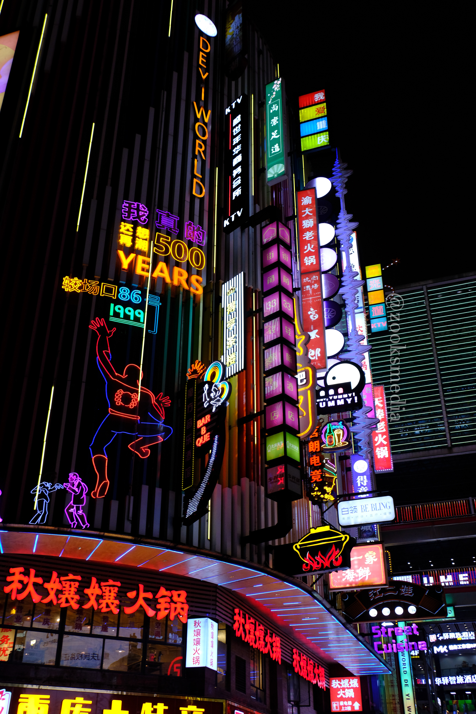
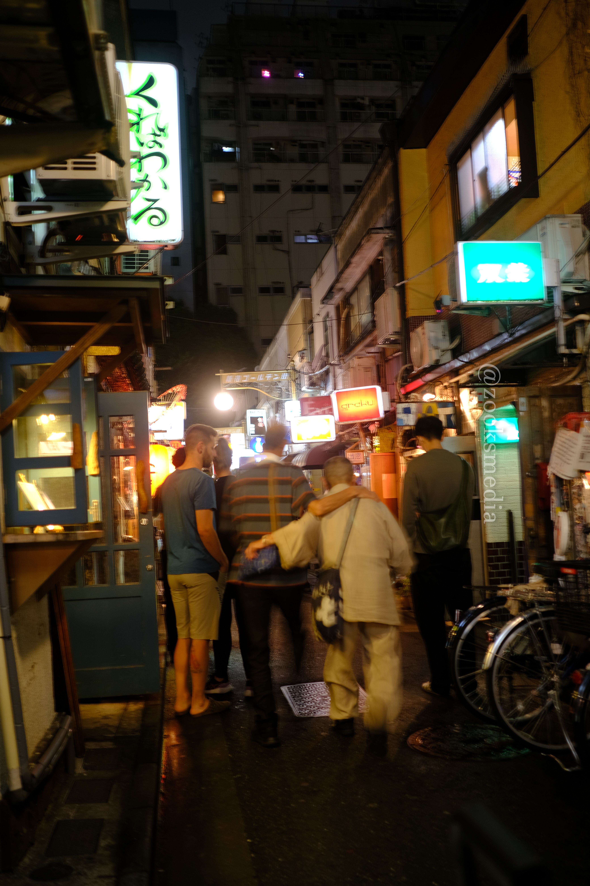

(Check out my socials here)
Previous Projects and Works
This video got me an A on my University Assignment
Demo Reel
The China Vlog Editing Timeline
The 1 Hour China Vlog Supercut

(Check out my socials here)





It's something I'm extremely passionate about and something I do in my free-time, so I thought- "why not make this my job?"
I started making fun videos when I was 17 for my friends to watch on YouTube (in 2019), starting out with fun edits of our game sessions, before I started filming my STEM projects, vlogs, cooking videos- before evolving into something else entirely.

Like most zoomers, I was raised on the early era of the internet, playing games on Miniclip, watching Smosh, (and RocketJump, Key andPeele, Pewdiepie, and 360p anime AMVs) and doomscrolling when I should be doing something important.
As a result of needing to feed the dopamine monkey inside my brain, I'm always tapped into the latest memes, pop culture and trends (chronically online) so I have a very good idea of what the algorithm likes, what the latest marketing trends are and where pop culture is- and where it’s heading towards.
Drop me a line: zooks@porkyproductions.com